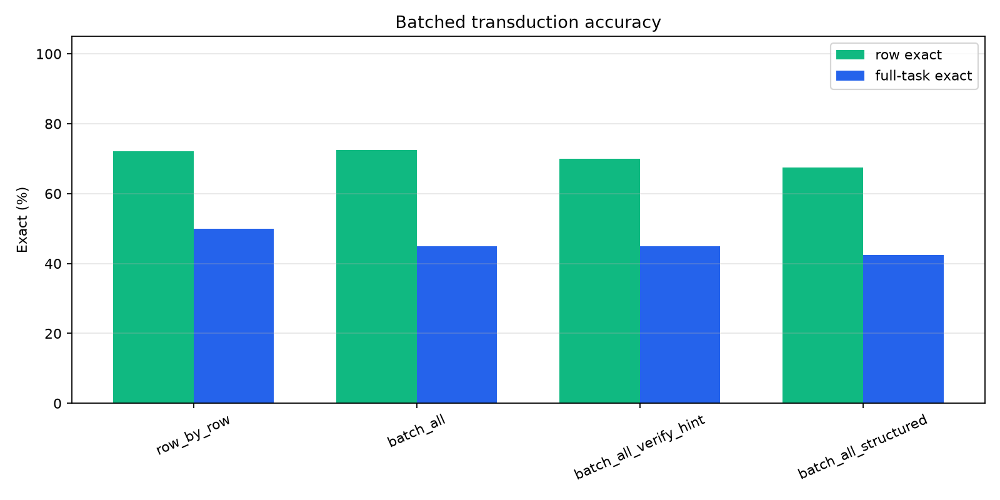
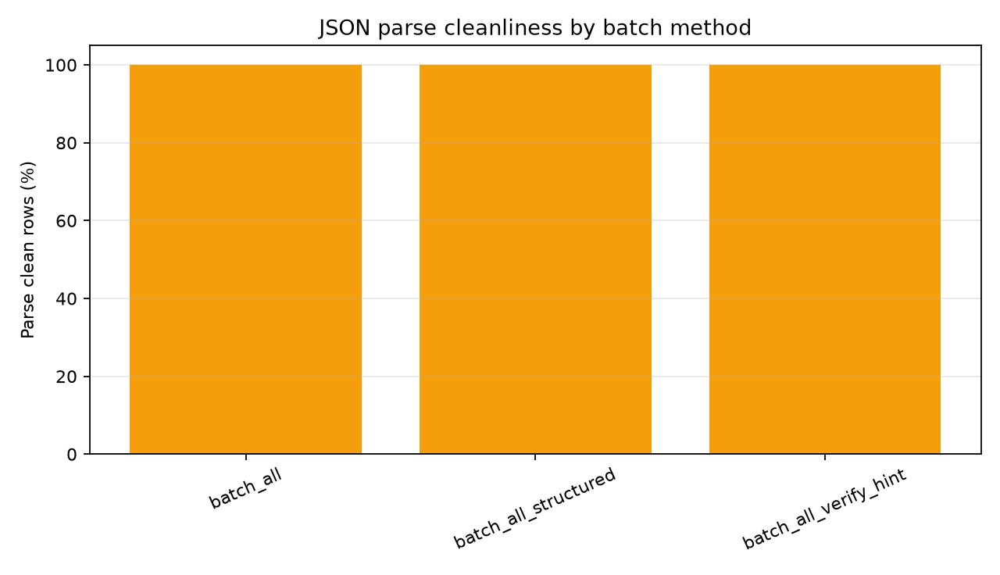
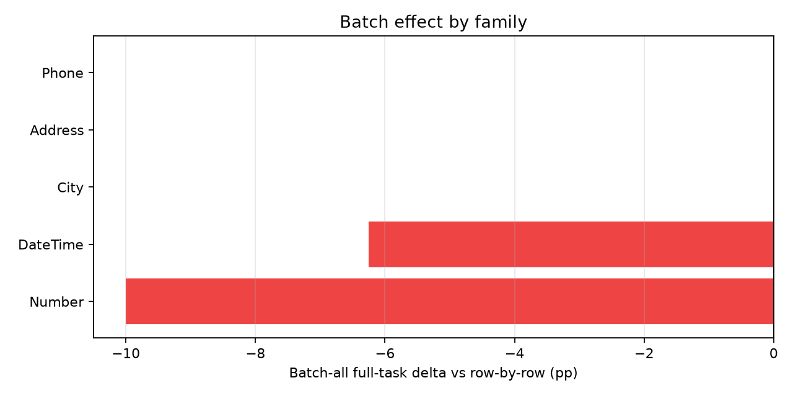
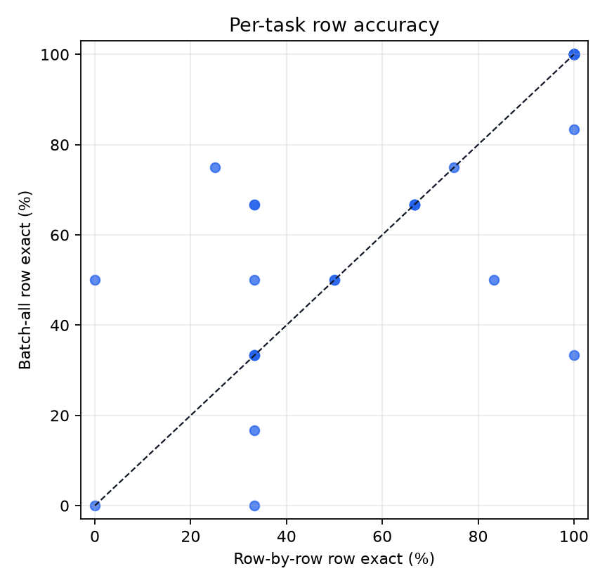
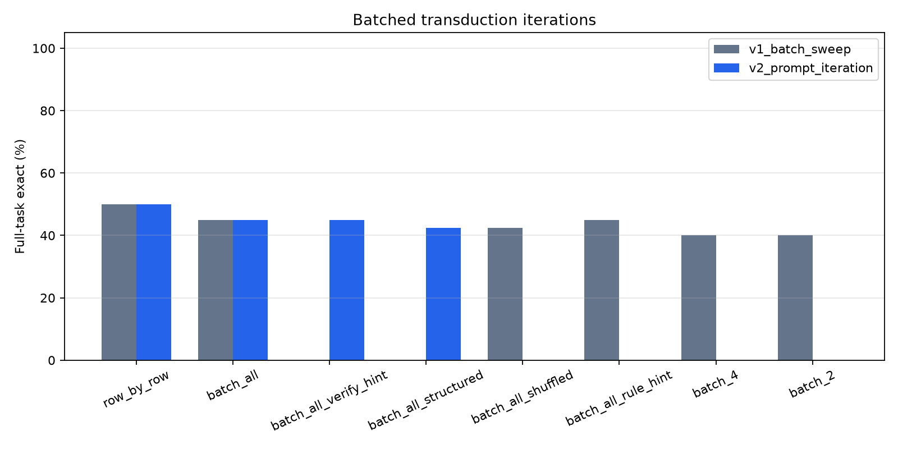

This standalone experiment tests whether answering multiple query rows in one shared generation context improves task-level consistency on public text-transformation tasks. The strict primary metric is full-task exact: all held-out rows for a task must be answered exactly.
| method | tasks | full_task_exact | row_exact | parse_ok_rate |
|---|---|---|---|---|
| batch_all | 40 | 45.0% | 72.5% | 100.0% |
| batch_all_structured | 40 | 42.5% | 67.5% | 100.0% |
| batch_all_verify_hint | 40 | 45.0% | 70.0% | 100.0% |
| row_by_row | 40 | 50.0% | 72.1% | 100.0% |
The first main run swept batch size and basic controls. The second main run kept the same 40-task sample and tested stricter batch prompts.
| iteration | method | tasks | full_task_exact | row_exact | parse_ok_rate |
|---|---|---|---|---|---|
| v1_batch_sweep | row_by_row | 40 | 50.0% | 72.1% | 100.0% |
| v1_batch_sweep | batch_2 | 40 | 40.0% | 70.2% | 99.2% |
| v1_batch_sweep | batch_4 | 40 | 40.0% | 71.7% | 99.2% |
| v1_batch_sweep | batch_all | 40 | 45.0% | 72.5% | 100.0% |
| v1_batch_sweep | batch_all_shuffled | 40 | 42.5% | 65.8% | 100.0% |
| v1_batch_sweep | batch_all_rule_hint | 40 | 45.0% | 69.0% | 100.0% |
| v2_prompt_iteration | row_by_row | 40 | 50.0% | 72.1% | 100.0% |
| v2_prompt_iteration | batch_all | 40 | 45.0% | 72.5% | 100.0% |
| v2_prompt_iteration | batch_all_verify_hint | 40 | 45.0% | 70.0% | 100.0% |
| v2_prompt_iteration | batch_all_structured | 40 | 42.5% | 67.5% | 100.0% |
| family | method | tasks | full_task_exact | row_exact |
|---|---|---|---|---|
| Address | batch_all | 2 | 0.0% | 50.0% |
| Address | batch_all_structured | 2 | 0.0% | 50.0% |
| Address | batch_all_verify_hint | 2 | 0.0% | 50.0% |
| Address | row_by_row | 2 | 0.0% | 50.0% |
| BillingCode | batch_all | 1 | 0.0% | 0.0% |
| BillingCode | batch_all_structured | 1 | 0.0% | 0.0% |
| BillingCode | batch_all_verify_hint | 1 | 0.0% | 0.0% |
| BillingCode | row_by_row | 1 | 0.0% | 33.3% |
| City | batch_all | 2 | 50.0% | 87.5% |
| City | batch_all_structured | 2 | 100.0% | 100.0% |
| City | batch_all_verify_hint | 2 | 100.0% | 100.0% |
| City | row_by_row | 2 | 50.0% | 87.5% |
| Column | batch_all | 1 | 100.0% | 100.0% |
| Column | batch_all_structured | 1 | 100.0% | 100.0% |
| Column | batch_all_verify_hint | 1 | 100.0% | 100.0% |
| Column | row_by_row | 1 | 100.0% | 100.0% |
| DateTime | batch_all | 16 | 50.0% | 75.0% |
| DateTime | batch_all_structured | 16 | 37.5% | 69.8% |
| DateTime | batch_all_verify_hint | 16 | 43.8% | 72.9% |
| DateTime | row_by_row | 16 | 56.2% | 70.8% |
| FilePath | batch_all | 1 | 100.0% | 100.0% |
| FilePath | batch_all_structured | 1 | 100.0% | 100.0% |
| FilePath | batch_all_verify_hint | 1 | 100.0% | 100.0% |
| FilePath | row_by_row | 1 | 100.0% | 100.0% |
| Gender | batch_all | 1 | 0.0% | 66.7% |
| Gender | batch_all_structured | 1 | 0.0% | 66.7% |
| Gender | batch_all_verify_hint | 1 | 0.0% | 66.7% |
| Gender | row_by_row | 1 | 0.0% | 66.7% |
| Language | batch_all | 1 | 100.0% | 100.0% |
| Language | batch_all_structured | 1 | 100.0% | 100.0% |
| Language | batch_all_verify_hint | 1 | 100.0% | 100.0% |
| Language | row_by_row | 1 | 100.0% | 100.0% |
| Name | batch_all | 1 | 100.0% | 100.0% |
| Name | batch_all_structured | 1 | 100.0% | 100.0% |
| Name | batch_all_verify_hint | 1 | 100.0% | 100.0% |
| Name | row_by_row | 1 | 100.0% | 100.0% |
| Number | batch_all | 10 | 20.0% | 62.5% |
| Number | batch_all_structured | 10 | 20.0% | 48.3% |
| Number | batch_all_verify_hint | 10 | 20.0% | 53.3% |
| Number | row_by_row | 10 | 30.0% | 64.2% |
| Phone | batch_all | 2 | 100.0% | 100.0% |
| Phone | batch_all_structured | 2 | 100.0% | 100.0% |
| Phone | batch_all_verify_hint | 2 | 100.0% | 100.0% |
| Phone | row_by_row | 2 | 100.0% | 100.0% |
| ShippingCode | batch_all | 1 | 0.0% | 33.3% |
| ShippingCode | batch_all_structured | 1 | 0.0% | 33.3% |
| ShippingCode | batch_all_verify_hint | 1 | 0.0% | 33.3% |
| ShippingCode | row_by_row | 1 | 0.0% | 33.3% |
| UserAgent | batch_all | 1 | 100.0% | 100.0% |
| UserAgent | batch_all_structured | 1 | 100.0% | 100.0% |
| UserAgent | batch_all_verify_hint | 1 | 100.0% | 100.0% |
| UserAgent | row_by_row | 1 | 100.0% | 100.0% |
| task_id | family | method | heldout_rows | full_task_exact | row_exact | parse_ok_rate |
|---|---|---|---|---|---|---|
| Address.000002 | Address | batch_all | 3 | False | 33.3% | 100.0% |
| Address.000002 | Address | row_by_row | 3 | False | 33.3% | 100.0% |
| Address.000013 | Address | batch_all | 6 | False | 66.7% | 100.0% |
| Address.000013 | Address | row_by_row | 6 | False | 66.7% | 100.0% |
| BillingCode.000007 | BillingCode | batch_all | 3 | False | 0.0% | 100.0% |
| BillingCode.000007 | BillingCode | row_by_row | 3 | False | 33.3% | 100.0% |
| City.000010 | City | batch_all | 3 | True | 100.0% | 100.0% |
| City.000010 | City | row_by_row | 3 | True | 100.0% | 100.0% |
| City.000011 | City | batch_all | 4 | False | 75.0% | 100.0% |
| City.000011 | City | row_by_row | 4 | False | 75.0% | 100.0% |
| Column.000001 | Column | batch_all | 6 | True | 100.0% | 100.0% |
| Column.000001 | Column | row_by_row | 6 | True | 100.0% | 100.0% |
| DateTime.000004 | DateTime | batch_all | 6 | True | 100.0% | 100.0% |
| DateTime.000004 | DateTime | row_by_row | 6 | True | 100.0% | 100.0% |
| DateTime.000007 | DateTime | batch_all | 6 | True | 100.0% | 100.0% |
| DateTime.000007 | DateTime | row_by_row | 6 | True | 100.0% | 100.0% |
| DateTime.000017 | DateTime | batch_all | 6 | True | 100.0% | 100.0% |
| DateTime.000017 | DateTime | row_by_row | 6 | True | 100.0% | 100.0% |
| DateTime.000025 | DateTime | batch_all | 6 | True | 100.0% | 100.0% |
| DateTime.000025 | DateTime | row_by_row | 6 | True | 100.0% | 100.0% |
| DateTime.000027 | DateTime | batch_all | 6 | False | 66.7% | 100.0% |
| DateTime.000027 | DateTime | row_by_row | 6 | False | 33.3% | 100.0% |
| DateTime.000034 | DateTime | batch_all | 6 | True | 100.0% | 100.0% |
| DateTime.000034 | DateTime | row_by_row | 6 | True | 100.0% | 100.0% |
| DateTime.000051 | DateTime | batch_all | 3 | False | 33.3% | 100.0% |
| DateTime.000051 | DateTime | row_by_row | 3 | False | 33.3% | 100.0% |
| DateTime.000076 | DateTime | batch_all | 6 | False | 66.7% | 100.0% |
| DateTime.000076 | DateTime | row_by_row | 6 | False | 66.7% | 100.0% |
| DateTime.000081 | DateTime | batch_all | 6 | False | 50.0% | 100.0% |
| DateTime.000081 | DateTime | row_by_row | 6 | False | 50.0% | 100.0% |
| DateTime.000094 | DateTime | batch_all | 4 | True | 100.0% | 100.0% |
| DateTime.000094 | DateTime | row_by_row | 4 | True | 100.0% | 100.0% |
| DateTime.000104 | DateTime | batch_all | 6 | True | 100.0% | 100.0% |
| DateTime.000104 | DateTime | row_by_row | 6 | True | 100.0% | 100.0% |
| DateTime.000108 | DateTime | batch_all | 6 | True | 100.0% | 100.0% |
| DateTime.000108 | DateTime | row_by_row | 6 | True | 100.0% | 100.0% |
| DateTime.000111 | DateTime | batch_all | 6 | False | 83.3% | 100.0% |
| DateTime.000111 | DateTime | row_by_row | 6 | True | 100.0% | 100.0% |
| DateTime.000114 | DateTime | batch_all | 6 | False | 50.0% | 100.0% |
| DateTime.000114 | DateTime | row_by_row | 6 | False | 0.0% | 100.0% |
| DateTime.000115 | DateTime | batch_all | 6 | False | 0.0% | 100.0% |
| DateTime.000115 | DateTime | row_by_row | 6 | False | 0.0% | 100.0% |
| DateTime.000116 | DateTime | batch_all | 6 | False | 50.0% | 100.0% |
| DateTime.000116 | DateTime | row_by_row | 6 | False | 50.0% | 100.0% |
| FilePath.000001 | FilePath | batch_all | 6 | True | 100.0% | 100.0% |
| FilePath.000001 | FilePath | row_by_row | 6 | True | 100.0% | 100.0% |
| Gender.000001 | Gender | batch_all | 3 | False | 66.7% | 100.0% |
| Gender.000001 | Gender | row_by_row | 3 | False | 66.7% | 100.0% |
| Language.000002 | Language | batch_all | 6 | True | 100.0% | 100.0% |
| Language.000002 | Language | row_by_row | 6 | True | 100.0% | 100.0% |
| Name.000028 | Name | batch_all | 6 | True | 100.0% | 100.0% |
| Name.000028 | Name | row_by_row | 6 | True | 100.0% | 100.0% |
| Number.000008 | Number | batch_all | 6 | False | 16.7% | 100.0% |
| Number.000008 | Number | row_by_row | 6 | False | 33.3% | 100.0% |
| Number.000015 | Number | batch_all | 6 | False | 50.0% | 100.0% |
| Number.000015 | Number | row_by_row | 6 | False | 33.3% | 100.0% |
| Number.000016 | Number | batch_all | 6 | False | 50.0% | 100.0% |
| Number.000016 | Number | row_by_row | 6 | False | 83.3% | 100.0% |
| Number.000022 | Number | batch_all | 6 | False | 33.3% | 100.0% |
| Number.000022 | Number | row_by_row | 6 | True | 100.0% | 100.0% |
| Number.000028 | Number | batch_all | 3 | True | 100.0% | 100.0% |
| Number.000028 | Number | row_by_row | 3 | True | 100.0% | 100.0% |
| Number.000029 | Number | batch_all | 3 | False | 66.7% | 100.0% |
| Number.000029 | Number | row_by_row | 3 | False | 66.7% | 100.0% |
| Number.000043 | Number | batch_all | 6 | True | 100.0% | 100.0% |
| Number.000043 | Number | row_by_row | 6 | True | 100.0% | 100.0% |
| Number.000049 | Number | batch_all | 4 | False | 75.0% | 100.0% |
| Number.000049 | Number | row_by_row | 4 | False | 25.0% | 100.0% |
| Number.000075 | Number | batch_all | 6 | False | 66.7% | 100.0% |
| Number.000075 | Number | row_by_row | 6 | False | 66.7% | 100.0% |
| Number.000077 | Number | batch_all | 3 | False | 66.7% | 100.0% |
| Number.000077 | Number | row_by_row | 3 | False | 33.3% | 100.0% |
| Phone.000008 | Phone | batch_all | 6 | True | 100.0% | 100.0% |
| Phone.000008 | Phone | row_by_row | 6 | True | 100.0% | 100.0% |
| Phone.000011 | Phone | batch_all | 3 | True | 100.0% | 100.0% |
| Phone.000011 | Phone | row_by_row | 3 | True | 100.0% | 100.0% |
| ShippingCode.000008 | ShippingCode | batch_all | 3 | False | 33.3% | 100.0% |
| ShippingCode.000008 | ShippingCode | row_by_row | 3 | False | 33.3% | 100.0% |
| UserAgent.000003 | UserAgent | batch_all | 6 | True | 100.0% | 100.0% |
| UserAgent.000003 | UserAgent | row_by_row | 6 | True | 100.0% | 100.0% |





Row-by-row inference reaches 72.1% row exact and 50.0% full-task exact. Batch-all reaches 72.5% row exact and 45.0% full-task exact, a full-task delta of -5.0% and a row-exact delta of 0.4%.
The result is a clean negative for batched transduction as a general consistency fix in this setup. Batch-all slightly improves average row exact, but it never flips a row-by-row-failed task into a full-task success on the 40-task sample, and it loses two tasks that row-by-row solved. The batch-size sweep shows larger batches are better than smaller batches, but the best batched arm still trails row-by-row on full-task exact. The stricter prompt iteration does not recover the gap: verify-hint batch-all ties plain batch-all at 45.0%, while structured JSON input falls to 42.5%.
The shuffled-order control is lower than normal batch-all, so ordering and shared context carry some signal. The signal is not enough to overcome the new batch failure mode: one wrong element in the JSON array spoils full-task exact, and batch prompting sometimes changes correct row-by-row outputs into wrong batched outputs.
This run uses deterministic decoding and a capped task sample. Batched JSON output is stricter than ordinary text output, so parse cleanliness is reported separately. Full-task exact is intentionally harsh; a method can have high row exact while failing full-task exact because one row is wrong.